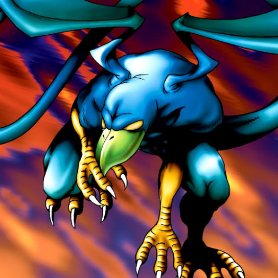

Kurama

STATS
ATK: 800
DEF: 800DECK COST
Deck Cost per Card: 16Fusion List (13 Possible Fusions)
- Kurama + Armaill = Mavelus
- Kurama + Charubin the Fire Knight = Mavelus
- Kurama + Dancing Elf = Winged Egg of New Life
- Kurama + Dark Gray = Garvas
- Kurama + Fire Eye = Mavelus
- Kurama + Fire Reaper = Mavelus
- Kurama + Firegrass = Mavelus
- Kurama + Flame Ghost = Mavelus
- Kurama + Flame Swordsman = Crimson Sunbird
- Kurama + Flame Snake = Mavelus
- Kurama + Flower Wolf = Garvas
- Kurama + Hoshiningen = Winged Egg of New Life
- Kurama + Wings of Wicked Flame = Mavelus